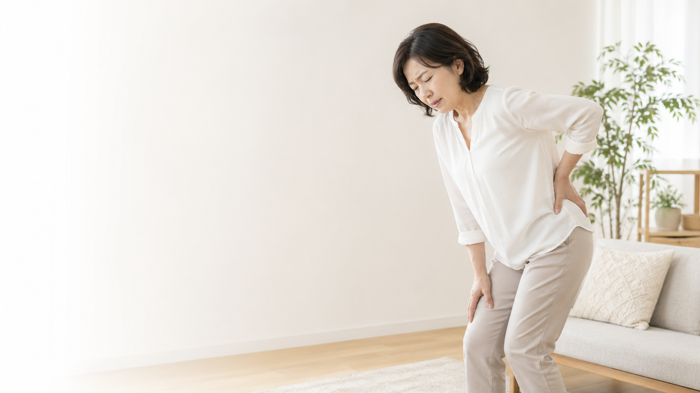

八尾市・近鉄八尾周辺で、お尻から足の痛み・しびれにお悩みの方へ。
長く座ると、お尻から太もも、ふくらはぎに痛みやしびれが出る
朝の一歩や寝返りで、ズキッと痛みが走る
湿布と痛み止めだけでは、変わっている実感がない
坐骨神経痛は、痛い場所だけを見ても全体像がつかみにくい症状です。腰、骨盤、股関節、足首、姿勢、動きの癖、冷えや巡り、栄養状態まで含めて見ることで、はじめて見えてくる背景があります。少し長いページですが、当院がどのように坐骨神経痛を捉え、どう向き合っているかをお伝えします。
坐骨神経とは、腰のあたりから始まり、お尻、太ももの裏、ふくらはぎ、足先へとつながる、体の中でもっとも太く長い末梢神経です。この坐骨神経が何らかの原因で圧迫されたり刺激を受けたりすることで生じる、痛み・しびれ・違和感などの症状をまとめて「坐骨神経痛」と呼びます。
知っておいていただきたいのは、坐骨神経痛は病名ではなく、あくまで症状の名前であるということです。つまり、坐骨神経痛と言われたからといって、原因が一つに決まっているわけではありません。背景にある原因によって、向き合う方向も変わります。
画像で大きなヘルニアが見つかっても症状が少ない方もいれば、画像では大きな異常がないのに強い痛みやしびれで苦しむ方もいらっしゃいます。画像所見と症状の強さは、必ずしも一致しません。
骨盤の歪み、股関節の硬さ、足首のバランス、姿勢の癖、動作の偏り、筋膜の張り、自律神経の状態、冷えや巡り、栄養の状態、心身の疲労度。こうした画像には写らない要素まで含めて、広い視野でお身体を見ていく必要があると考えています。
排尿・排便のコントロールが難しい、会陰部にしびれや感覚の鈍さがある、足に力が入らずつま先立ちやかかと立ちができない、足の筋力が目に見えて落ちている、安静にしていても夜間に強い痛みで眠れない、発熱を伴う腰や下肢の痛みがある、痛みが日に日に強くなり急速に悪化している。このような場合は、まず整形外科など医療機関を受診されることをおすすめします。
当院では、必要と判断した場合には医療機関の受診をおすすめすることがあります。鍼灸院だけで抱え込まず、医療機関と上手に役割分担しながら、お一人おひとりに合った道筋をご提案いたします。
整形外科を受診すると、レントゲンやMRIで状態を確認し、湿布、痛み止め、ビタミンB12製剤、ときに神経ブロック注射などで様子を見る流れになることがあります。もちろん、こうした対応で楽になっていく方もいらっしゃいますし、医師の判断はとても大切です。
ただ、そこで抜け落ちやすいのが「なぜそこに負担が集まっているのか」という視点です。痛みという信号を抑えるだけでは、骨盤・背骨・股関節・足首のアンバランスや、日常動作の偏りは残ることがあります。痛みが一時的に和らいでも、同じ場所にまた負担が集まると、症状を繰り返しやすくなります。
痛い場所だけでなく、構造、東洋医学、動き、栄養を重ね合わせることで、その方の体に起きていることを丁寧に整理します。
仙腸関節、腰仙関節、骨盤の左右差、股関節、足首、肋骨と骨盤の位置関係、立っているときの重心などを確認します。痛む場所と原因のある場所が一致しないことも多いため、足元から首までのつながりとして見ます。
坐骨神経のラインと関係の深い膀胱経・胆経の流れ、腎虚、瘀血、寒湿、気滞血瘀などの体質を見立てます。冷えや天候、時間帯による変化も、体質を知る大切な手がかりです。
メディカルトレーナーの学校で学んだ機能解剖学・運動学・リハビリテーションの視点を取り入れ、立つ、座る、歩く、しゃがむ、寝返るといった基本動作を確認します。
分子栄養学を学び、慢性的な炎症、ビタミンB群、マグネシウム、たんぱく質、血糖値、腸内環境など、回復の土台に関わる要素も必要に応じて確認します。
坐骨神経痛を繰り返す方の多くは、立ち上がるときに同じ側へ体重を乗せる、歩くときに片側の骨盤が使えていない、腰を反らせるときに股関節ではなく腰椎ばかりが動く、体幹が安定せずお尻や太ももの後ろに頼りすぎる、足指が地面をつかめていない、といった動作の偏りを抱えていることがあります。
ご本人には自然な動きなので、自覚しにくいものです。当院では施術で整えたものを日常生活で崩さないこと、ご自身の力で再発を遠ざけていただくことを大切にしています。
初診では約90分の時間をいただきます。いつ頃からの症状か、どんな動きや姿勢でつらくなるか、生活習慣、睡眠、食事、お気持ちの状態まで、できるだけゆっくりお伺いします。
姿勢、動作、関節の動き、筋肉の状態、東洋医学的な体質、日常動作の癖を総合して、今のお身体に何が起きているのかをお伝えします。
鍼、お灸、手技、骨格・骨盤の調整、軟部組織へのアプローチを、お身体の状態に合わせて必要な分だけ組み合わせます。鍼が不安な方には、刺さない鍼やごく細い鍼から始めます。
施術で整えたお身体を日常の中で崩さないために、簡単なエクササイズ、ストレッチ、温め方、座り方、立ち方などをお伝えします。
次回までにどのように過ごしていただきたいか、どんな変化を観察していただきたいかを、お帰りの際にお伝えします。
坐骨神経痛と向き合ううえで、施術と同じくらい大切なのが毎日のセルフケアです。無理なくできるものから、二週間ほど続けてみてください。
湯船にしっかり浸かる、温熱シートでお尻と腰の間を温めるなど、冷えから守ってあげてください。
デスクワークの方は40分から50分に一度、立ち上がって軽く歩いたり腰を回したりする時間を作りましょう。
仰向けで四の字を作り、お尻の奥がじんわり伸びる範囲で20秒から30秒、深い呼吸とともに保ちます。
足指を一本ずつ回す、タオルを足指でたぐり寄せるなど、足元から全身のバランスを整えます。
鼻から吸って口から長く吐く呼吸を、五回から十回ほど繰り返します。痛みで浅くなった呼吸を整えます。
これらのセルフケアを二週間ほど続けても変化が感じられない場合や、痛み・しびれが強くなっていく場合は、お一人で抱え込まずにご相談ください。
坐骨神経痛そのものだけでなく、背景に関わりやすい腰椎椎間板ヘルニア、脊柱管狭窄症、東洋医学、栄養、運動について、院長が書いた関連記事をまとめました。
ヘルニアと診断された方へ。病院での診断を大切にしながら、鍼灸・カイロプラクティック的な視点でできることを整理した記事です。
腰痛から坐骨神経痛につながる痛み・しびれを、神経、炎症、組織修復の三方向から支える栄養の視点で解説しています。
歩くと足がしびれる、少し休むと楽になる方へ。腰だけでなく、骨盤・股関節・歩き方まで見る考え方をまとめています。
腎の弱り、冷えと湿、瘀血、気血の巡りなど、足の痛みやしびれを東洋医学ではどう見立てるのかを整理した記事です。
無理に頑張るのではなく、症状を悪化させにくい姿勢と量から運動を積み上げるためのセルフケア記事です。
炎症、神経、筋肉、血糖や体重など、足の痛み・しびれが出にくい土台づくりを栄養面から考える記事です。
坐骨神経痛に対する鍼灸の研究は、腰痛全般に比べるとまだ数が限られます。それでも近年、慢性坐骨神経痛や椎間板ヘルニア由来の坐骨神経痛を対象にした質の高い研究が発表されています。ここでは、誇張せず「現時点で分かっていること」としてご紹介します。
Acupuncture vs Sham Acupuncture for Chronic Sciatica From Herniated Disk: A Randomized Clinical Trial
椎間板ヘルニア由来の慢性坐骨神経痛の方216名を対象に、鍼治療と偽鍼を比較した多施設ランダム化比較試験です。4週間で、脚の痛みを示すVASと機能障害を示すODIの両方で、鍼治療群のほうが大きな変化を示しました。52週後まで差が残ったこと、重い有害事象が報告されなかったことも特徴です。ただし中国の三次医療機関で行われた研究であり、すべての方に同じ結果を保証するものではありません。
論文を読む（JAMA Internal Medicine）Effectiveness of acupuncture in the treatment of chronic sciatica from herniated disks: a systematic review and meta-analysis
2015年5月から2025年5月までのランダム化比較試験をまとめたシステマティックレビュー・メタ解析です。11件、868名のデータを統合し、鍼治療は対照群と比べて脚の痛みVASと機能障害ODIの改善に関連していました。一方で、研究の多くが中国で行われていることや、方法論上の限界も指摘されており、慎重な解釈が必要です。
論文を読む（Frontiers in Medicine）Efficacy and Safety of Acupuncture for Chronic Discogenic Sciatica, a Randomized Controlled Sham Acupuncture Trial
椎間板由来の慢性坐骨神経痛に対して、鍼治療と偽鍼を比較したランダム化比較試験です。4週間で12回の施術を行い、脚の痛みVAS、腰痛VAS、ODIなどを評価しました。参加者数は46名と大規模ではありませんが、偽鍼と比較する設計で、鍼灸の可能性と安全性を検討した研究として参考になります。
論文を読む（Pain Medicine）掲載している研究は、当院の施術結果を保証するものではありません。当院では、研究で示されている知見を参考にしながらも、画像所見、症状の強さ、動きの癖、生活背景を確認し、必要に応じて医療機関の受診をおすすめします。
坐骨神経痛は、長く積み重なってきたお身体のアンバランスがあらわれていることがあります。そのため、一回の施術ですべてが変わるというものではありません。
最初の数回で痛みやしびれの強さに変化を感じていただけることがあります。そこから、お身体の使い方や日常の癖が整っていくまでには、もう少し時間をかけて取り組むことになります。施術の頻度や期間は、お身体の状態を見ながらご相談のうえで決めていきます。
どこに相談したらいいか分からない段階でも構いません。
お尻から足の痛み・しびれが続く方、セルフケアを二週間続けても変化が乏しい方は、まずは今のお身体の状態を一緒に整理してみませんか。
坐骨神経痛は、痛みやしびれそのものもつらいのですが、それ以上に「このまま変わらないのではないか」「前のように動けないのではないか」「年齢のせいだから仕方ないのか」という不安が、心を重くしてしまう症状でもあります。
私自身、鍼灸師、柔道整復師、メディカルトレーナー、カイロプラクター、三軸修正法、元プライマリーモーションB級認定指導員として、二十年以上にわたり、たくさんのお身体と向き合ってまいりました。そして、分子栄養学を学び、東洋医学・身体の構造・動き・栄養という四つの視点を統合して、お一人おひとりに合った道筋を組み立てていくことを大切にしています。
画像にあらわれない部分にこそ、お身体が抱えているヒントがあることもあります。不安なお気持ちを、ひとりで抱え込まないでください。まずは一度、お話を聞かせていただくところから始めていただければと思います。
院長 今西 健
今西健はり・灸院は、八尾市堤町にある、ひとり院長の小さな鍼灸院です。院内には母が毎月生けてくれる季節の花が飾られ、ゆっくりと深呼吸できる静かな時間が流れています。お一人おひとりとじっくり向き合いたいので、完全予約制とさせていただいています。
他の方と顔を合わせにくいよう配慮していますので、落ち着いてお越しください。往診のご相談も承っております。
初診
12,000円
約90分。丁寧な問診・評価・施術・セルフケア指導を含みます。
鍼灸用の鍼はとても細いものを使用します。刺激の感じ方には個人差がありますが、鍼が初めてで不安な方には、刺さないタイプの鍼から始めることもできますので、ご遠慮なくお申し出ください。
症状の強さや経過によって異なりますが、最初のうちは週に一回程度のペースをご提案することがあります。落ち着いてきたら、二週に一回、月に一回と徐々に間隔を広げていきます。お身体の状態を見ながら、ご相談のうえで決めます。
大丈夫です。整形外科でのお薬や検査と並行して、当院で施術を受けていただくことに問題はありません。医療機関と上手に役割分担をしながら、お身体に合った道筋を選ぶことを大切にしています。
ご相談いただけます。画像所見だけでなく、今のお身体がどう動いているか、どこに負担が集まっているかを評価したうえで、適切な施術を組み立てていきます。状態によっては医療機関の受診をおすすめする場合もございます。
当院ではお着替えのご用意がございませんので、肘と膝が出せる服装でお越しください。半袖・七分袖や、裾をまくり上げやすいゆったりとしたパンツなどがおすすめです。スカートやタイトなジーンズですと施術がしづらいため、お控えいただけますと幸いです。お仕事帰りで難しい場合は、ご予約時にひとことお知らせください。
あります。専用駐車場のご案内については、ご予約時にお伝えいたしますので、お気軽にお問い合わせください。
関連する症状ページ